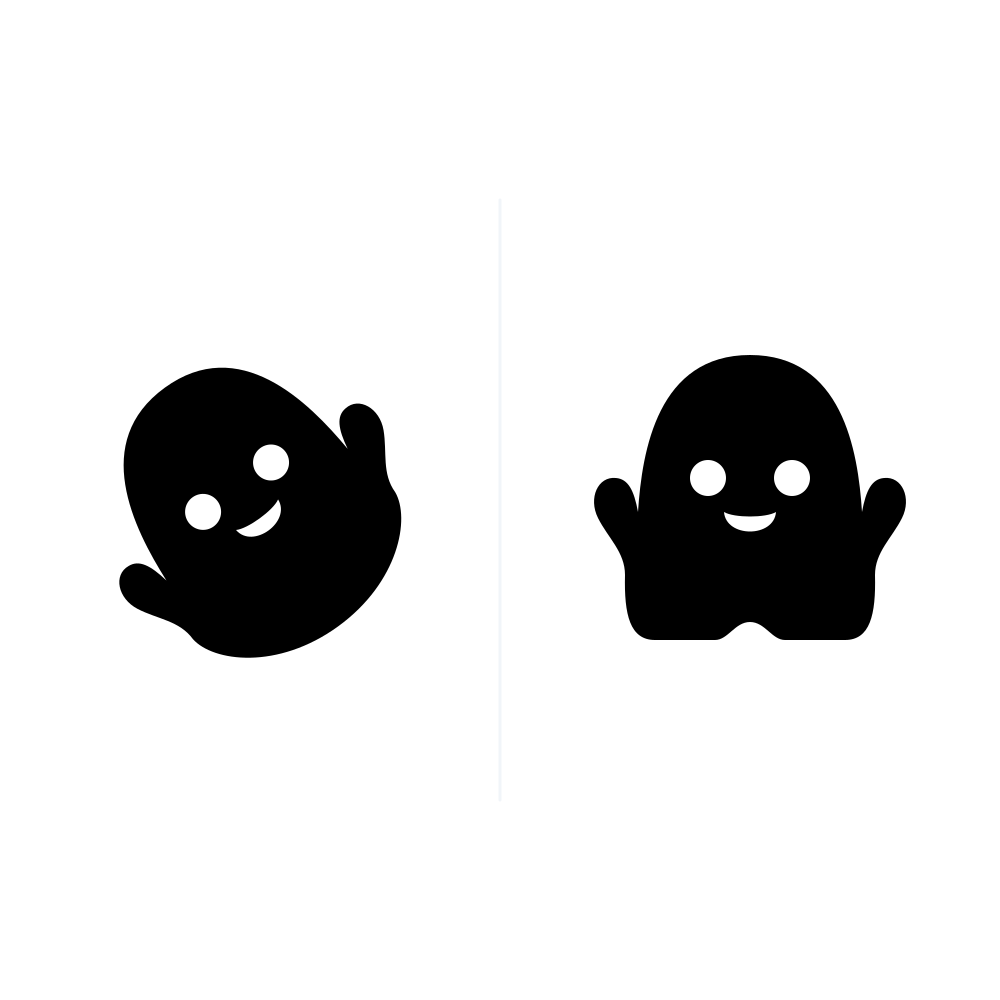
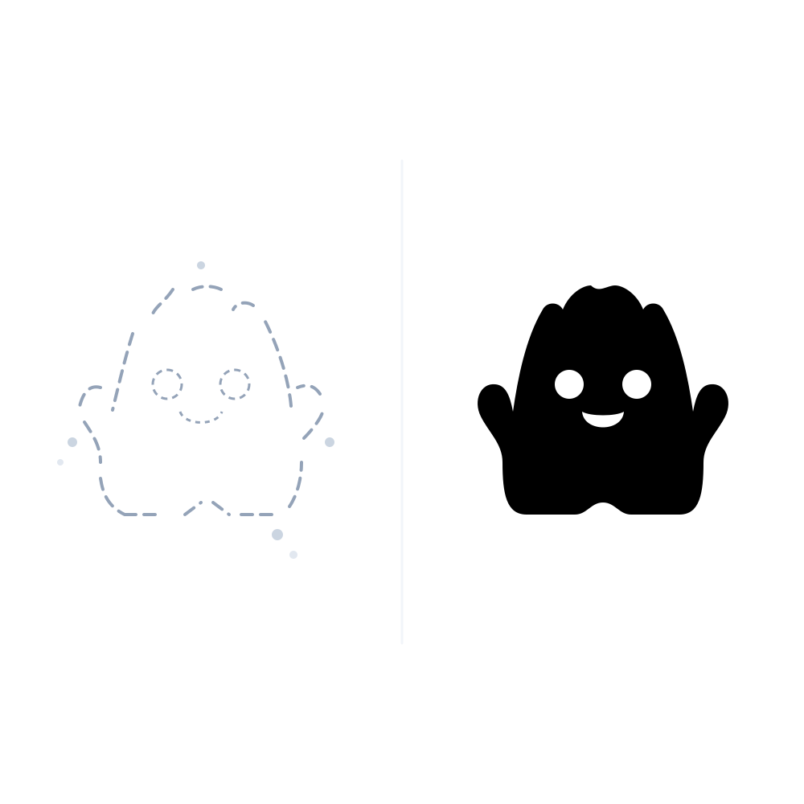

Una experiencia vacacional pionera donde los estudiantes de Chorrillos diseñan sus propios personajes en relieve, los fabrican con impresión 3D en tiempo real, crean una colección con identidad propia y la transforman en un producto tangible listo para el mercado.

Cada estudiante fabrica, pinta y empaqueta entre 3 y 4 piezas de autor, presentándolas en el Demo Day Final.
Una propuesta diseñada para rentabilizar la infraestructura del colegio durante las vacaciones, posicionando a la institución como referente de innovación tecnológica en el distrito.
Mientras colegios del entorno (Innova, Saco Oliveros, Trilce) ofrecen talleres deportivos tradicionales, Mater Admirabilis se adelanta con Fabricación Digital e Impresión 3D real, un programa exclusivo y de alta demanda familiar.
El taller está abierto a alumnos del colegio y a vecinos de Chorrillos. Al ingresar al plantel en enero y febrero, los padres externos conocen las instalaciones y la cultura del colegio, convirtiéndose en prospectos calificados para la matrícula escolar 2027.
El colegio no gasta en compras de impresoras, licencias ni repuestos. TinkiLab se encarga de todo el dictado técnico, el soporte de máquinas y los insumos, mientras el colegio administra las inscripciones en sus canales oficiales.
Un roadmap progresivo de 18 horas lectivas donde cada 2 sesiones se supera una estación formativa, transformando una simple idea en papel en una colección de juguetes coleccionables.
La forma y personalidad de tu personaje en papel
Sus contornos y curvas digitales en la pantalla
El grosor y relieve para darle cuerpo sólido 3D
Tu creación física capa por capa en 3D
Cada personaje con tus colores y pinturas favoritas
Lanzando tu primera colección de juguetes al mercado
El aprendizaje no termina al salir del colegio. Los estudiantes tienen acceso a nuestra plataforma de desafíos con video-tutoriales paso a paso, plantillas 3D descargables y rúbricas de validación geométrica (estabilidad de base, trazo cerrado y huecos de corte). Los padres pueden monitorear el avance de las misiones en tiempo real.

Base Estable Equilibrio físico
Trazo Cerrado Solidez de mallaNo es un taller recreativo superficial; está alineado con las competencias de Ciencia y Tecnología, Arte y Emprendimiento del Currículo Nacional.
Manejo de coordenadas tridimensionales (X, Y, Z), simetría, escala, vistas ortogonales y cálculo de proporciones volumétricas.
Comprensión de tolerancias mecánicas, ensamble de piezas por encaje, optimización de trayectorias y comportamiento térmico de polímeros.
Cultura de prototipado rápido: ver el error de impresión no como fracaso, sino como dato para iterar y perfeccionar el diseño físico.
Presentación pública de proyectos (pitch), branding del producto, diseño de empaques y nociones de valor comercial de una creación propia.
Todo el peso tecnológico lo absorbe TinkiLab. El colegio aprovecha su infraestructura existente sin complicaciones.

Mueve el control deslizante para simular cuántos alumnos se inscriben. Observa la rentabilidad directa del colegio con inversión de S/ 0 en equipos.
Por cada alumno inscrito, Mater Admirabilis retiene una comisión neta directa del 20% (o S/ 70 por alumno) solo por facilitar el aula y los canales de cobro. TinkiLab asume el 100% del dictado, máquinas y filamentos.
Totalmente seguro. Utilizamos exclusivamente filamento PLA (Ácido Poliláctico), un bioplástico obtenido de almidón de maíz o caña de azúcar, 100% atóxico y sin emisión de gases nocivos. Además, la boquilla de extrusión cuenta con guardas de seguridad y es manipulada bajo supervisión estricta de los mentores de TinkiLab.
No. Todo el modelado 3D se realiza en Tinkercad y en la plataforma de TinkiLab, las cuales se ejecutan 100% en la nube a través de Google Chrome. Cualquier computadora o laptop escolar con acceso a internet es suficiente.
El horario más recomendado para el verano son 2 sesiones semanales de 90 minutos (ejemplo: Martes y Jueves de 10:00 a.m. a 11:30 a.m., o en las tardes de 3:30 p.m. a 5:00 p.m.). Nos adaptamos a la disponibilidad de la sala de cómputo del colegio.
Se entrega una certificación oficial compartida con los logos de TinkiLab y el Colegio Mater Admirabilis, acreditando las 18 horas lectivas en Diseño Digital, Fabricación 3D y Habilidades STEAM.
Estamos listos para sostener una reunión técnica con la dirección y la promotoría del Colegio Mater Admirabilis para revisar el aula, fijar el calendario y proveer el material publicitario para abrir inscripciones.